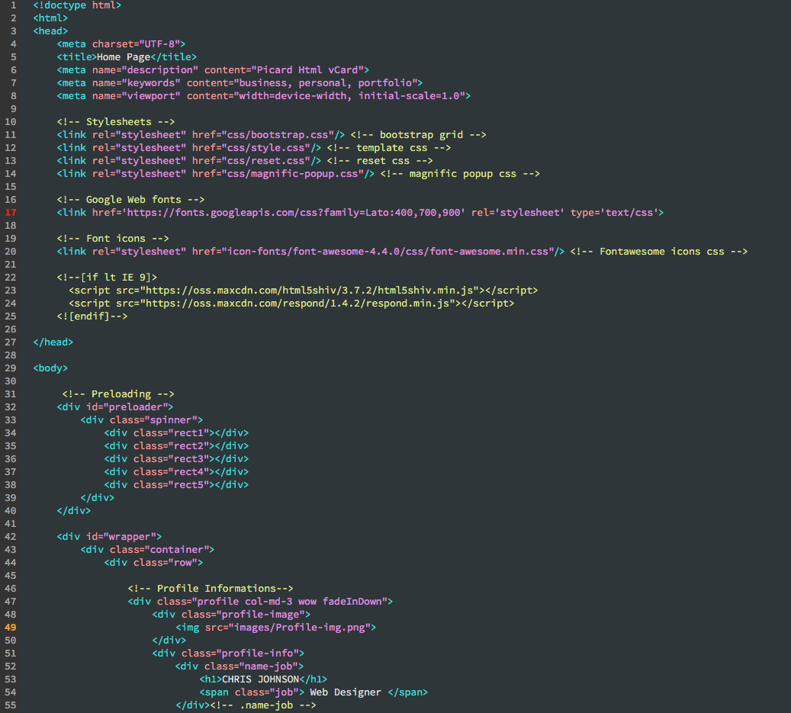

Antes que nada, gracias por adquirir el portafolio GuIAFS. Puedes encontrar información detallada sobre la plantilla en este documento. Si hay algo que no puedas encontrar aquí, puedes enviar un correo a través de la página de perfil.

/* Table of Content ================================================== 1. Body and Core Css 2. Home Page 3. About Page 4. Resume Page 5. Portfolio Page 6. Contact Page 7. Sidebar 8. Blog Page 9. Work Single Page 10. Features 11. 404 Page 12. Responsive
Este archivo incluye los estilos principales de Bootstrap
FuenteEste archivo contiene estilos sobre la librería de iconos Fontawesome
FuenteEste archivo contiene estilos sobre la librería de iconos Essential
FuenteRestablece todos los estilos
FuenteEstilos del lightbox del portafolio
FuenteEstilos del plugin jQuery de barra de desplazamiento personalizada
FuenteArchivos CSS del plugin deslizador Owl
FuenteTodos los estilos sobre la plantilla
jQuery es una librería de JavaScript rápida, pequeña y rica en funciones.
FuentePlugin de portafolio para jQuery
FuenteAscensor es un plugin de jQuery que tiene como objetivo entrenar y adaptar el contenido de acuerdo con un sistema de ascensor.
FuentePlugin para filtro de portafolio y otras características
FuentePlugin lightbox para jQuery
FuentePlugin de barra de desplazamiento personalizada para páginas
FuentePlugin de deslizador carrusel Owl
FuentePlugin JS de Bootstrap para características
FuenteEste archivo contiene todos los scripts sobre el sitio.